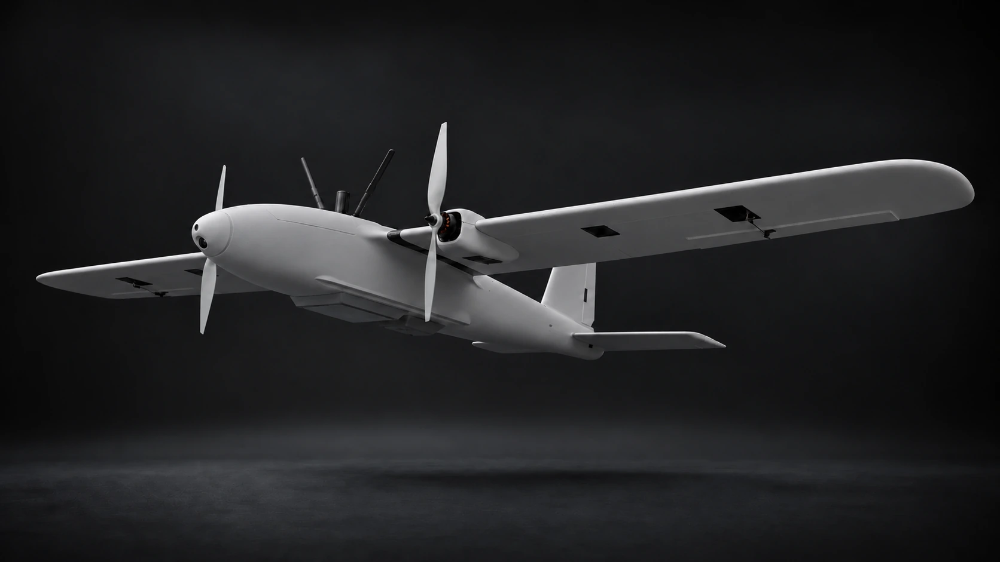
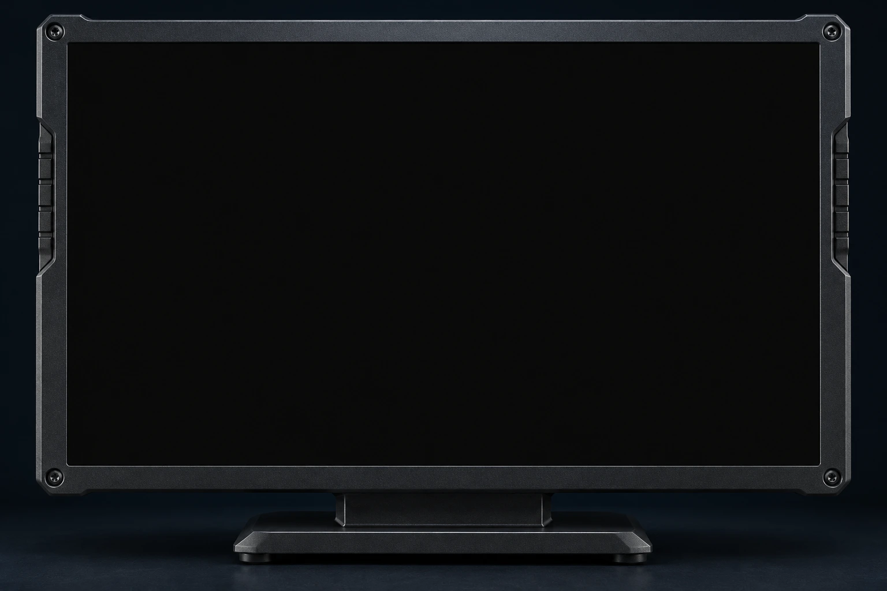
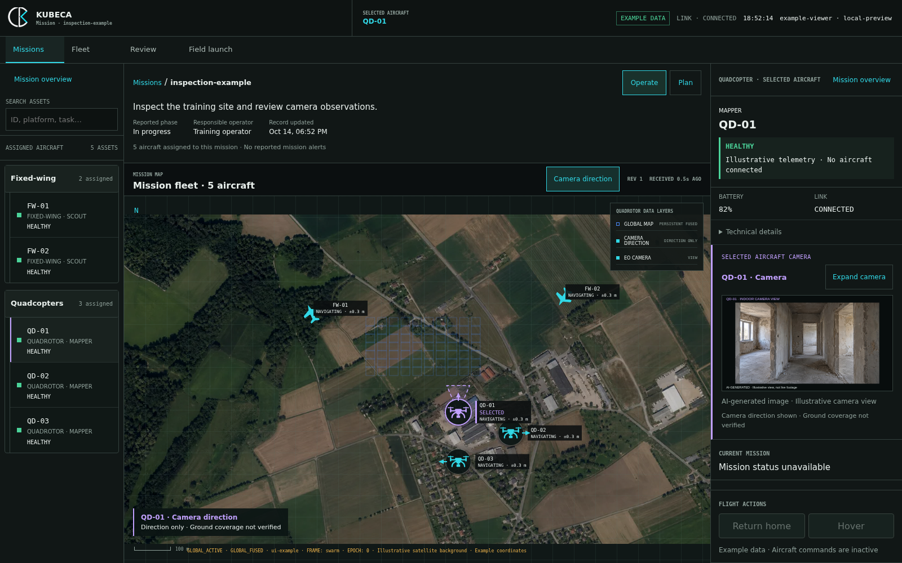

01 / Reach
Extend the reach.
The fixed-wing platform is designed for long-range reconnaissance. A separate carrier drone is planned to bring quadcopters closer to the mission area.

Technology / In development
One C2 workspace to plan and supervise the mission. Fixed-wing aircraft, quadcopters and onboard navigation to carry it out.
01 / System
Designed to connect fixed-wing reach and quadcopter exploration through onboard visual navigation and one shared C2 interface.
01 / Reach
The fixed-wing platform is designed for long-range reconnaissance. A separate carrier drone is planned to bring quadcopters closer to the mission area.
02 / Explore
Visual-inertial navigation and onboard mapping support local exploration when satellite positioning is unreliable, giving quadcopters a view of their surroundings.
03 / Command
Assign missions in natural language, review the plan and supervise the fleet from KUBECA C2. Aircraft status, imagery and detections stay in one shared view.
02 / Hardware

A modular fixed-wing platform designed around reach, remote access, and GNSS-denied navigation.
Modular options
03 / Software
Command and control for fixed-wing aircraft and quadcopters. Plan by text or speech, review tasks and supervise the mission.


Give an individual drone or a quadcopter team its task. Dictated instructions become editable text.
Check the proposed tasks for each aircraft. Approve the plan, then start the mission as a separate action.
Follow assigned aircraft on a shared map. Open an aircraft’s camera and status, or focus on its platform group.
Software / Fixed-wing navigation
Visual navigation and satellite-image matching run automatically. Operators can review camera-to-map comparisons when needed.
Automatic matching. Optional review.
The demo could not load. Open the video directly.
Real flight data. Maximum position error after visual correction: 5–25 m. Image comparison is optional.
Software / Quadcopter coordination
See how a quadcopter team explores and shares observations, with the mission supervised through C2.
Flexible tasks. Shared situational awareness.
The demo could not load. Open the video directly.
An animated example based on a two-drone office digital twin. Tasks and coordination are mission-defined; detection is one possible task. Camera views are captured observations. Person detection in this example is simulated.
Technology & collaboration
Talk with us about technology, integration, or collaboration.
Contact the team